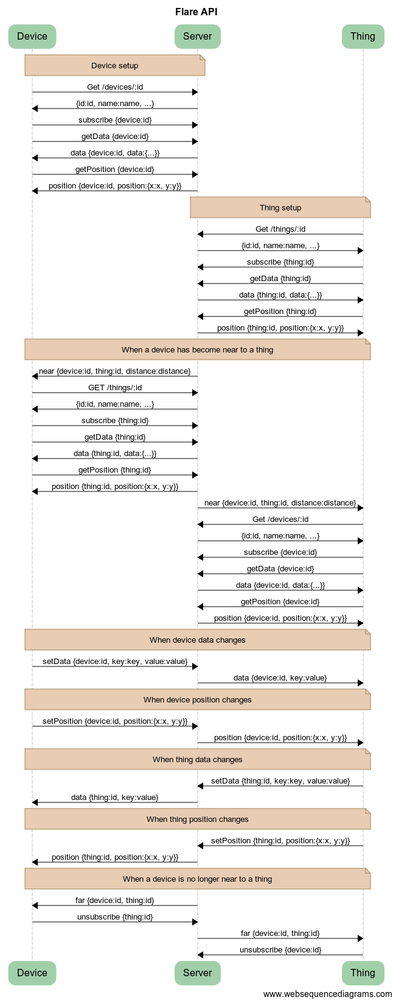

This page explains how an app can use the Flare Socket.IO API to discover and interact with things in an environment. There are also platform-specific tutorials for JavaScript, Swift, and Java.
This diagram has many arrows and should make everything clear:
The device client makes a REST API call to the server to get information about the device:
GET /environments/123/devices/234
The server's response contains the name, description, etc. for the device:
{
"environment": "123",
"_id": "234",
"name": "Andrew's iPhone",
"description": "iPhone 6 (32 GB)",
"data": {
"angle": 60
},
"position": {
"x": 2,
"y": 1
}
}
The client then subscribes to the device so that it will receive any notifications about it:
subscribe {"device":"234"}
Then it requests the most recent data:
getData {"device":"234"}
The server replies by sending back the data:
data {"device":"234", "data":{"angle": 60}}
The client requests the most recent position:
getPosition {"device":"234"}
The server replies by sending back the position:
position {"device":"234", "position":{"x":2, "y":1}}
The thing client makes a REST API call call to the server to get information about the thing:
GET /environments/123/zones/456/things/789
The server's response contains the name, description, etc. for the thing:
{
"environment": "123",
"zone": "456"
"_id": "789",
"name": "Window",
"description": "In traditional Japanese architecture,
a shōji (障子) is a door, window or room divider
consisting of translucent paper over a lattice of bamboo.",
"data": {
"brightness": 0.7,
"color": "blue"
},
"position": {
"x": 10,
"y": 0
},
}
The client then subscribes to the thing so that it will receive any notifications about it:
subscribe {"thing":"789"}
Then it requests the most recent data:
getData {"thing":"789"}
The server replies by sending back the data:
data {"thing":"789", "data":{"brightness":0.7, "color":"blue"}}
The client requests the most recent position:
getPosition {"thing":"789"}
The server replies by sending back the position:
position {"thing":"789", "position":{"x":10, "y":0}}
When the device's position changes, it sends a message to the server:
setPosition {"device":"234", "position":{"x":9, "y":1}}
The server will then notify all other clients that have subscribed to the device. Note that it won't send a message back to the client that sent the original message, because it already has the latest information.
If the server calculates that a device has become near to a thing because the distance between their positions is less than a certain threshold, it will broadcast a near message to all clients that have subscribed to the thing:
near {"device":"234", "thing":"789", "distance":1.414}
The device client can then get information about the thing:
GET /environments/123/zones/-/things/789
Note: If the device client doesn't know what zone the thing is in, it can just use a dash. The REST URL syntax is verbose, but the thing ID what matters. The response will be similar to the one above.
The device client subscribes to the thing:
subscribe {"thing":"789"}
It gets the latest data:
getData {"thing":"789"}
The server replies by sending back the data:
data {"thing":"789", "data":{"brightness":0.7, "color":"blue"}}
The client requests the most recent position:
getPosition {"thing":"789"}
The server replies by sending back the position:
position {"thing":"789", "position":{"x":10, "y":0}}
The server will also broadcast the same near message to all clients that have subscribed to the device:
near {"device":"234", "thing":"789", "distance":1.414}
The thing client can then get information about the device:
GET /environments/123/devices/234
The response will be similar to the one above.
The thing client subscribes to the device:
subscribe {"device":"234"}
It gets the latest data:
getData {"device":"234"}
The server replies by sending back the data:
data {"device":"234", "data":{"angle": 60}}
The client requests the most recent position:
getPosition {"device":"234"}
The server replies by sending back the position:
position {"device":"234", "position":{"x":9, "y":1}}
Either client can change the thing's data:
setData {"thing":"789", "key":"color", "value":"purple"}
The server will then notify all other clients that have subscribed to the thing:
data {"thing":"789", "data":{"color":"purple"}}
Either client can change the device's data:
setData {"device":"234", "key":"angle", "value":120}
The server will then notify all other clients that have subscribed to the device:
data {"device":"234", "data":{"angle":120}}
Any client can perform an action on the thing:
performAction {"thing":"789", "action":"rainbow"}
The action can be handled by the server or any client. If it is not handled by the server, a message will be broadcast to all other clients subscribed to the thing:
handleAction {"thing":"789", "action":"rainbow"}
Any client can perform an action on the device:
performAction {"device":"234", "action":"counterclockwise"}
Similarly, if the action is not handled by the server, a message will be broadcast to all other clients subscribed to the device:
handleAction {"device":"234", "action":"counterclockwise"}
If the thing's position changes, it can send a message to the server:
setPosition {"thing":"789", "position":{"x":10, "y":1}}
The server will then notify all other clients that have subscribed to the thing:
position {"thing":"789", "position":{"x":10, "y":1}}
Note: near and far messages are only triggered when the device's position changes.
If the device's position changes again, it will send a message to the server:
setPosition {"device":"234", "position":{"x":4, "y":5}}
You get the idea by now:
position {"device":"234", "position":{"x":4, "y":5}}
The server will notice when the device is no longer near to the thing, and notify all clients subscribed to the device:
far {"device":"234", "thing":"789"}
The device can then unsubscribe from the thing, and then it won't receive notifications about the thing anymore.
unsubscribe {"thing":"789"}
The server will send the same message to all clients subscribed to the thing:
far {"device":"234", "thing":"789"}
And the thing can unsubscribe from the device as well:
unsubscribe {"device":"234"}